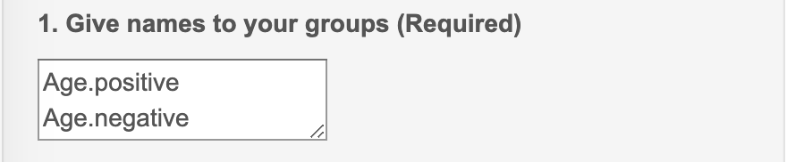
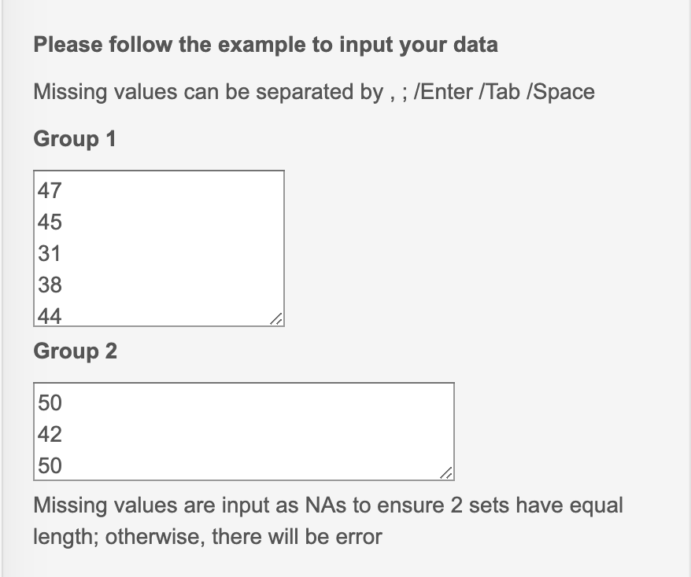
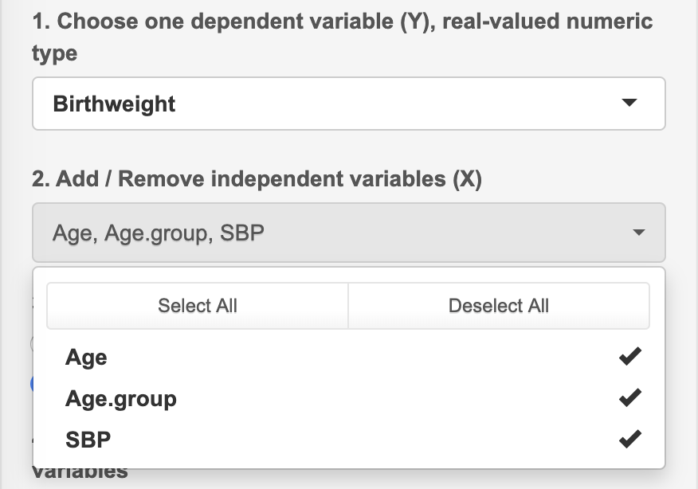

All kinds of input in the Area 3
1. Manual input data vector
To input data, name and values are required to match each other.
1.1. Input data name

Attentions
Each line is used to input only one name, because input values are split by "Enter".
Do not leave the name empty (missing value). Missing value may cause error in the outputs.
1.2. Input data values

Attentions
Values are separated by ",", ";", "Space", or "Enter".
Data can be directly copied from CSV file (one column) and pasted into the box.
Missing value can be input as NA or space.
2. Upload CSV/TXT panel
When it takes time to input data, users can upload CSV or TXT file from local device. The upload data will cover the input data.

Attentions
Show 1st row as column names?: Yes, when first row in the data are the names.
Use 1st column as row names? (No duplicates): Yes, when first column is ID or row names.
When data is TXT file, please choose the correct separator, such as space or tab.
3. Create the contingency table
Row names, column names, and values are required to match.
Value are input by row order without missing values.
Finally, total number in rows and columns are generated.
4. Edit the data
In the regressions and dimensional analysis methods, we created panels for users to do some easy preprocessing on the data.
The panel is shown as below. We will use the example in the Linear Regression to show how to do the pre-processing.

4.1. Convert numeric variable into categorical variable and vise versa
Choose some variable from the list. For example, we converted
Birthweightinto a categorical variable, although this is not appropriate.Choose some variable from the list. For example, we converted
Age.groupinto a numeric variable, although this is not appropriate.
We can see that in the numeric variable information list,
Age.groupbecame the numeric variable with values1 2.We can see that in the categorical variable information list,
Birthweightbecame the categorical variable with 7 levels ("95", "100", "105", "120", "125", "130", "135").
4.2. Change the reference levels of categorical variables
We continue to use the example in the Linear Regression to show how to change the reference level of the categorical variables.
- After the convert, now we have 2 categorical variables:
BirthweightandAge.group. The reference level were"95"and"a".
We choose some categorical variables, and input the desired reference level. One line is used to input one value.
After the change, the reference levels of
BirthweightandAge.groupare"100"and"b".
5. Build the model
- In the regressions and dimensional analyses, users need to use this panel to build the model first.
5.1. Choose dependent and independent variables

Single choice or multiple choices are used to choose the dependent / independent variables.
Multiple choice have buttons to "Select all" or "Deselect all" variables.
5.2. Check models

This panel will show the created model.
If the model is correct, users can click button to generate the result.